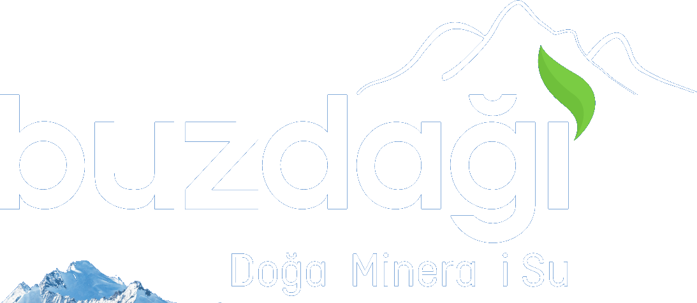

OPERASYON PANELİ
Stok Yönetim Merkezi
Depo, sevkiyat ve stok hareketlerini tek ekrandan yönetin.
🔔
0
Fabrika Stok Bildirimleri
Okundu işaretle
Henüz bildirim yok.
● CANLI
↓ Excel Yedeği
Dashboard
Fabrika Dashboard
Stok Girişi
Kritik Stok